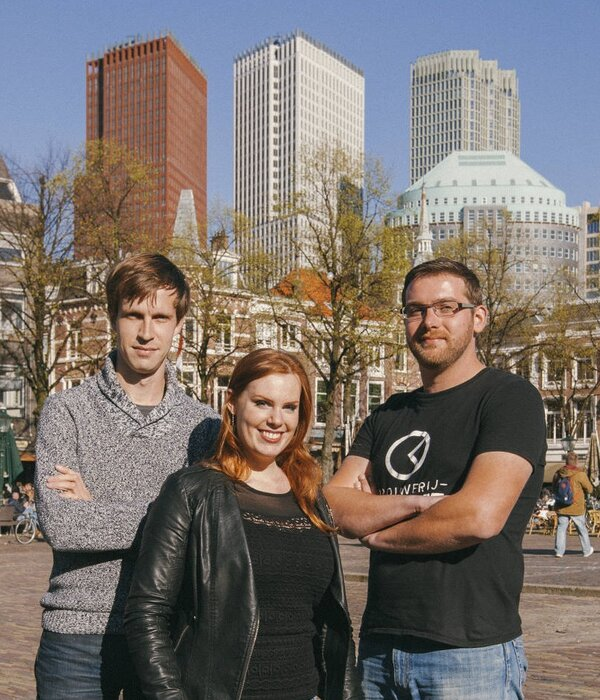

Brouwerij Kwartje is een kleinschalige bierbrouwerij met een eigen
brouwinstallatie gevestigd in het centrum van Den Haag.
Alle bieren ontwikkelen en produceren wij zelf op ambachtelijke wijze.
Brouwerij Kwartje maakt moderne stijl bieren met uitgesproken smaken.
De brouwerij is in 2015 opgericht opgericht door Alexander en Rembrandt. Na een korte periode als huurbrouwer is besloten om een eigen brouwerij te realiseren. Dit is in 2016 na een succesvolle crowdfunding campagne verwezenlijkt.
De brouwers zijn naast de brouwerij werkzaam in de IT. Dit is terug te zien in de naamgeving van de meeste bieren. De naam Kwartje is afkomstig van de gelijknamige vriendengroep uit het verleden waar de brouwers elkaar hebben leren kennen. Jaren later bij het brouwen van bier is besloten deze naam nieuw leven in te blazen.
De brouwerij is in 2015 opgericht opgericht door Alexander en Rembrandt. Na een korte periode als huurbrouwer is besloten om een eigen brouwerij te realiseren. Dit is in 2016 na een succesvolle crowdfunding campagne verwezenlijkt.
De brouwers zijn naast de brouwerij werkzaam in de IT. Dit is terug te zien in de naamgeving van de meeste bieren. De naam Kwartje is afkomstig van de gelijknamige vriendengroep uit het verleden waar de brouwers elkaar hebben leren kennen. Jaren later bij het brouwen van bier is besloten deze naam nieuw leven in te blazen.